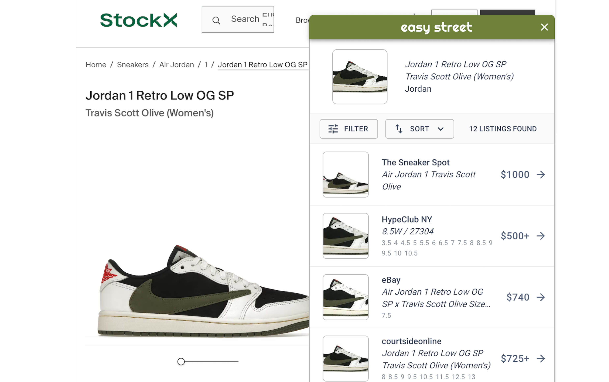

Easy Street
A smart online shopping companion

Easy Street is a Chrome extension that transforms online shopping by allowing users to easily filter visually similar products on price, size, color, and more. When the user lands on a product page, the extension fetches the main image and then uses image recognition to find visually similar results. These are then extracted for their product attributes and listed in a compact pop-up window on the side of the user's screen. From there, they can easily sort through products in their size or price range or preference, saving them time and money.
I designed the UI, implemented it using React and used Python and Flask for all backend logic (image recognition, feature extraction, etc.)